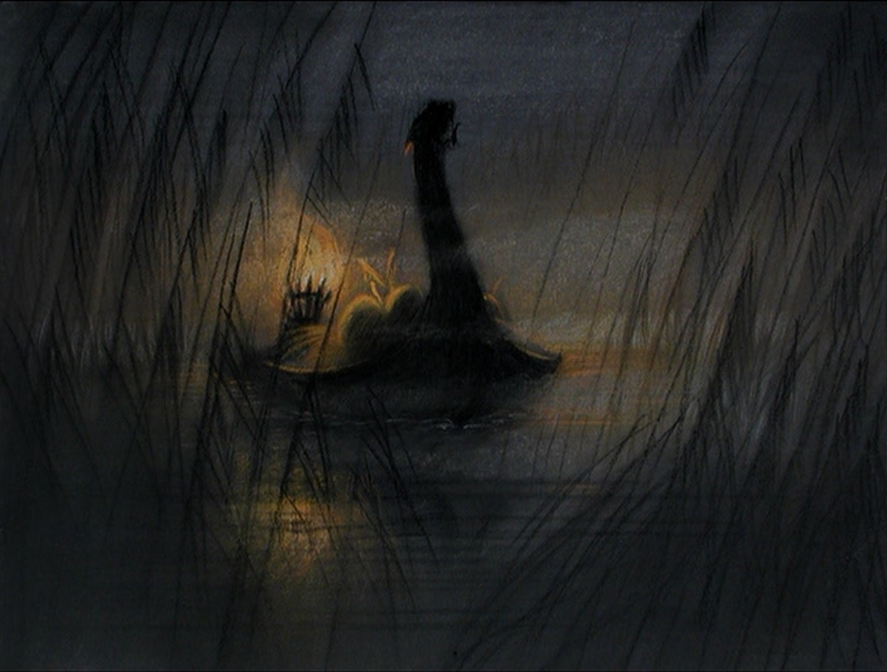

Contexto
Tuonela es conocido en la mitología finlandesa como el reino de los muertos, lugar donde moran todas las almas de los fallecidos. Su origen proviene de un poema llamado Kalevala, quien representa una de las referencias más importantes en la literatura folclórica de Finlandia; además ha sido motivo de inspiración para varios artistas, por eso te invitamos a leer este articulo donde conocerás más de esta mitología.
Que representa
Es una referencia en la mitología finlandesa evocada en los poemas de Kalevala, el cual se considera una referencia literaria para los que les gusta investigar sobre la mitología de ese país; en el mismo se describe a este de lugar sagrado donde el héroe Rapsoda llamado Väinämöinen, viaja a Tuonela para obtener el conocimiento de la muerte.
El relato es una especie de epopeya que evoca toda la historia del personaje que está considerado uno de los precursores de las leyendas finlandesas, sin embargo Tuonela viene a ser el lugar donde todas las criaturas llegan con el fin de reconocer sus culpas y buscar la paz de sus almas.
Leyenda de Tuonela
En el poema se hace referencia además a una situación donde el héroe conoce a la guía transportadora que lo intenta llevar a Tuonela, esta guía es similar a la que aparece en la mitología griega llamada Caronte, pero en este caso es una joven conocida como la niña de Tuonela, quien lo lleva a través del río Tuoni en una travesía por el inframundo.
En la isla de Tuoni, el héroe no logra obtener el conjuro que buscaba y luego de una serie de intrépidas situaciones para evitar los obstáculos que las figuras dominantes le interponen, logra salir airoso. Cuando regresa al mundo de los vivos, lo meten preso por maldecir a cualquier persona que intentó entrar al domino de los muertos.
Esta leyenda es muy interesante y se ha hecho un pequeño resumen de lo que realmente sucedió, no se quiso entrar en detalles, pero lo importante es que ha servido de inspiración a muchos artistas finlandeses a crear obras literarias y musicales.
Precio y servicio
Horarios: los lunes a partir de las 00:00
Requisitos: Morir
Servicios: Una barca y un remo
Precio: 600 almas.